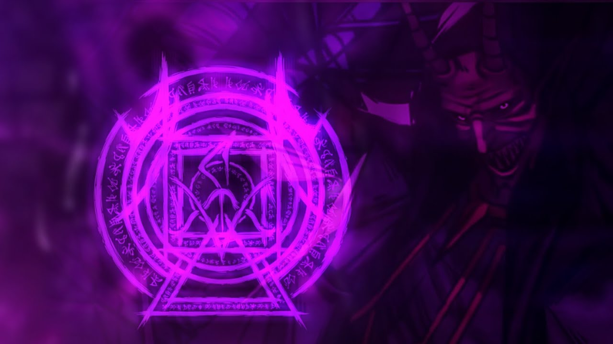

Vamos jogar
Conheça nossOS JOGOS Nosso sitePra ver nossos jogos apenas encontrar no asklfjahsflakjhf
Conheça nossOS JOGOSdiferenciais
Conheça nossOS JOGOS historia
A EnErGia dE OrDeM pAraNoRmAl É cOmO uM FuRaCãO CóSmIcO QuE dAnÇa EnTrE aS LiNhAs dO ImPoSsÍvEl, uM CaOs OrDeNaDo QuE qUeBrA aS LeIs dA ReAlIdAdE CoM uM SoRrIsO SaRcÁsTiCo. ElA ViBrA eM FrEqUêNcIaS QuE Só Os LoUcOs E Os EsCoLhIdOs CoNsEgUm CaPtAr, EnChEnDo o Ar CoM uMa ElEtRiCiDaDe InViSíVeL QuE FaZ AtÉ aS SoMbRaS SuSsUrRaReM SeGrEdOs PrOiBiDoS. QuEm MaNiPuLa EsSa EnErGiA nÃo CoNtRoLa ApEnAs O MuNdO FíSiCo, MaS As CaMaDaS OcUlTaS Do UnIvErSo, OnDe MeMóRiAs EsQuEcIdAs E DiMeNsÕeS SoMbRiAs Se EnTrElAçAm NuM BaLé InSaNo. São Paulo.
Acesse nosso site Veja os jogos
DeNtRo DeSsA FoRçA BrUtA E MíStIcA, O TeMpO PeRdE o JuÍzO E O EsPaÇo Se DoBrA CoMo OrIgAmI Em ChAmAs, CrIaNdO BrEcHaS OnDe MoNsTrOs ImAgInÁrIoS E ViSõEs DeLiRaNtEs EsCaPaM PaRa O NoSsO PlAnO. É Um PoDeR QuE CoRrÓi A SaNiDaDe, MaS OfErEcE O DoM Da PeRcEpÇãO SuPrEmA — VeR AlÉm Do VéU, OuViR Os EcOs Do FuTuRo E ReEsCrEvEr O PrEsEnTe CoM ToQuEs De CaOs OrDeNaDo. QuEm TeNtA DoMaR A EnErGiA De OrDeM PaRaNoRmAl CaMiNhA NuMa LiNhA TêNuE EnTrE O GêNiO E A LoCuRa, OnDe O DeStInO É UmA ApOsTa AlUcInAnTe.
Na BaTaLhA, EsSa EnErGiA ExPlOdE Em RaJaDaS QuE NãO ApEnAs DeStRoEm CoRpOs, MaS FrAgMeNtAm A EsSênCiA DoS PrÓpRiOs SoNhOs. ElA Se MaNiFeStA CoMo TeMpEsTaDeS De LuZ DiStOrCiDa, VoZeS QuE EnLlOuQuEcEm E PuLsOs QuE FaZeM O MuNdO GiRaR De CaBeÇa PaRa BaIxO — Um CaRnAvAl MaCaBrO OnDe O InImIgO NãO SaBe Se DeVe FuGiR Ou Se ReNdEr Ao ÊxTaSe Do ApOcAlIpSe ImInEnTe. É A FoRçA DoS InSaNoS, A CeNtElHa Do DeScOnHeCiDo, A DaNçA EnLlOuQuEcIdA Da OrDeM No MeIo Do CaOs AbSoLuTo.